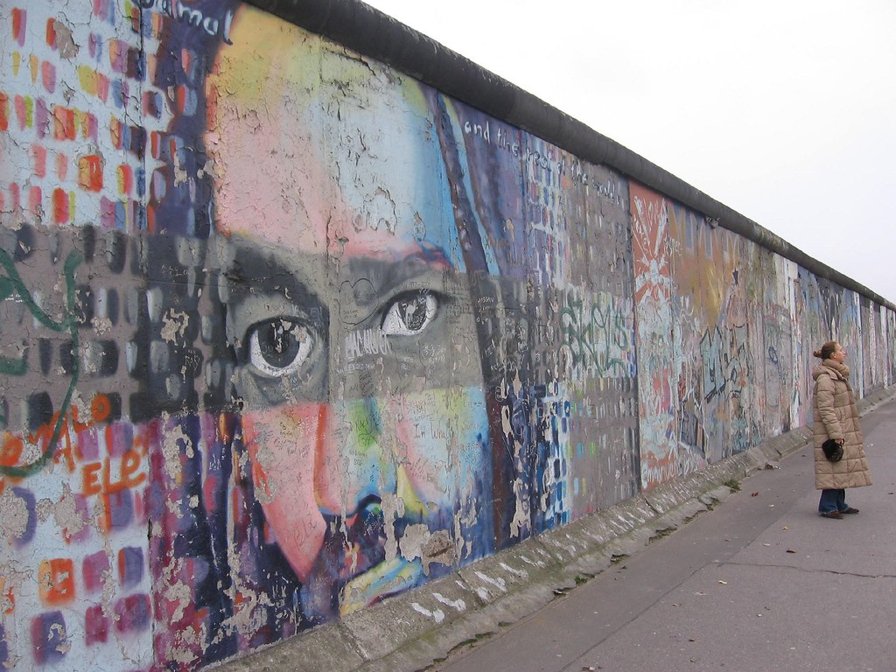
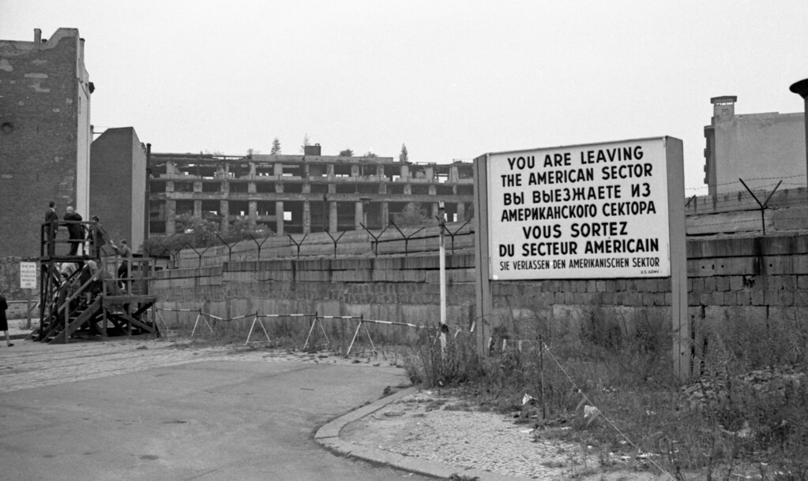
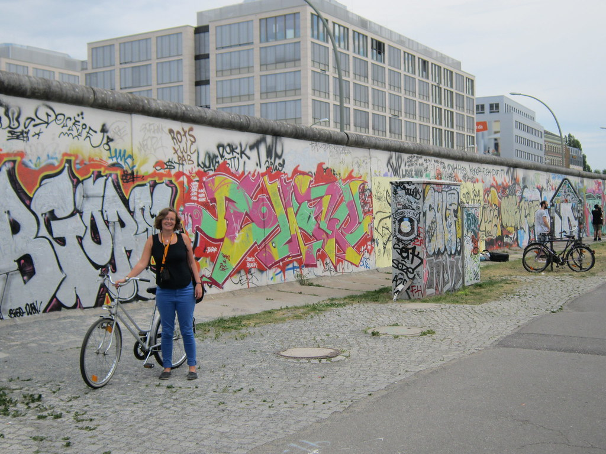

The Berlin Wall
The fall of Berlin Wall and the reunification of Germany was the result of people were fight for their freedoms and rights, I was taught from the interview of the director Florian Henckel von Donnersmarck. He discussed what Germany has been going through, and described a society that people were living with full pressure and eager to find way to get their own rights and their freedoms. The reunification of Germany was a perfect option, but it was the best and a historical necessary choice made by both sides of Berlin wall people’s fighting during that period, I got this thought after reading  Ladd’s book The Ghosts of Berlin. It was difficult to Germany even tho it was a great moment that Germany reunified. However, because of the huge gapes of many areas between West Germany and East Germany, Germany’s economy was falling down for a while after reunification. Since Berlin was the main city that has been involved, Berlin had to a great responsibility to finish the achievement of reunification of Germany and be a historical monument. Truly the reunification of Germany had been through many struggles, people who used to live different sides of the wall had many conflicts with each others.
Luckily, the fall of Berlin Wall and the reunification of Germany seems more far away to us, and Germany have been getting over through all problems it has and become one of the best country in the world. We should still remember these historical events and enjoy what people have fought for us.
More Info 